Popote (Popotilla, jarilla)
Nombre Científico: Gymnosperma glutinosa.
Características: Hierba de 1.5 m. Hojas largas y delgadas. Las flores crecen en racimo en la punta de la hierba y son de color amarillo. Sus tallos exudan un material pegajoso.
Usos: Elaborar escobas, elaboración del barro.
Especie: Nativa
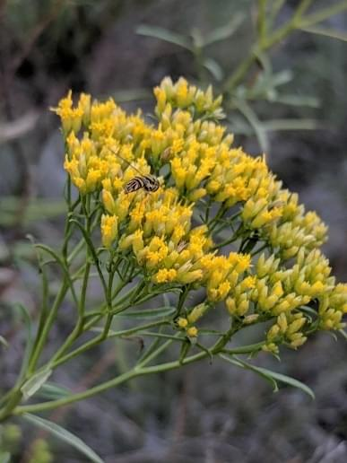
Medicinal: Se ocupan para fracturas, golpes y torceduras, en baños de posparto, el dolor de oído, picaduras de hormigas, y el empacho. También, se elaboran pomadas para aliviar dolores musculares y el reumatismo.
Área de distribución: Asociada al bosque tropical caducifolio y matorral xerófilo.
Mes de floración: Abril.
Colorín
Nombre Científico:Erythrina sp.
Características Es un árbol erecto que mide hasta 8 m de alto, sin espinas; Sus flores están en grupos en formas de tubo color rojo; Su fruto son vainas torcidas y dentro de ellas se encuentran las semillas, semejantes a un frijol, solo que rojizas. Al menos, existen 9 especies en el Valle Tehuacán.
Especie: Nativa
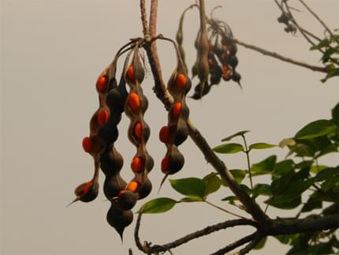
Usos: Se ocupan como cerca viva. Las flores son comestibles (con un sabor a carne). Las semillas se usan para hacer joyería y en bolsitas para las enfermedades culturales, como el mal de ojo, el susto y el mal aire.
Medicinal: La corteza se ocupa para problemas de los riñones, también es una especie con potencial para la restauración ecológica.
Área de distribucion: En matorrales, pastizales, selva baja caducifolia, ocasionalmente en la región de pino-encino.
Mes de floración y fruto: Agosto a noviembre.
Cazahuate Negro
Nombre Científico:Ipomoea pauciflora.
Características Se trata de un árbol o más frecuentemente un arbusto, que puede alcanzar una altura de 3 a 8 metros, con ramas arqueadas, generalmente en flor mientras se encuentra desprovisto de hojas, con tallo liso y corteza de color café claro. Libera un látex blanquecino. Las hojas miden de 4 a 10 cm, son de forma ovalada o acorazonadas, finamente punteadas y lisas. Las flores brotan sobre tallos cortos, solitarios o en grupos de tres o incluso seis, a menudo situadas a cada lado de las ramas.
Especie: Nativa
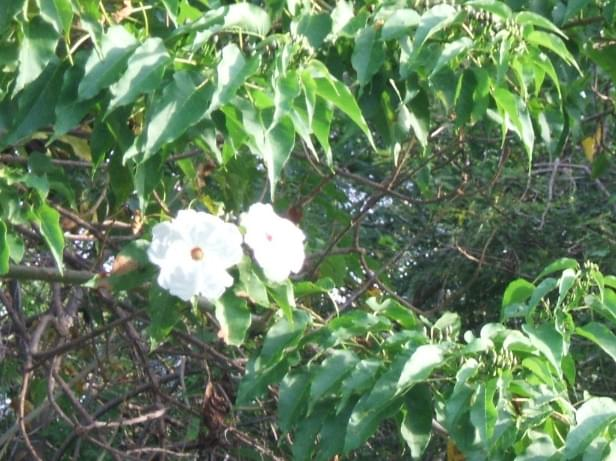
Usos: Leña; se usa la madera seca para hornear el barro.
Medicinal: Las flores se hierven y usan para detener hemorragias; el látex se ocupa para sanar heridas y llagas; la corteza se usa para contrarrestar la picadura de alacrán y para evitar la caída del cabello.
Área de distribucion: De selva baja caducifolia y vegetación secundaria (Mixteca poblana, Cerro Colorado, Coixtlahuaca).
Mes de floración y fruto: Florece de octubre hasta abril y fructifica de enero a mayo.
Campanilla (Tronadora, Retama)
Nombre Científico:Tecoma stans.
Características Es un arbusto o árbol, de 1 a 8 m de altura. Las hojas están divididas de 5 a 13 foliolos (división de la hoja), con o sin vellosidades en el reverso. Las flores semejan pequeñas campanas amarillas y están agrupadas en racimos vistosos generalmente en las puntas de las ramas. Los frutos son cápsulas alargadas de hasta 21 cm, color verde y cuando maduros se tornan cafés, contienen muchas semillas aplanadas y provistas de alas.
Especie: Endémica.
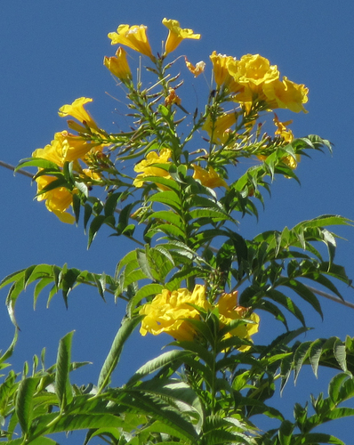
Usos: Se usa internamente como remedio popular para el tratamiento de la Diabetes Tipo 2, aunque las hojas y las flores también son utilizadas para tratar resfriados, fiebre, ictericia (coloración amarilla de la piel), dolor de cabeza y problemas renales.
Área de distribucion: De selva baja caducifolia y vegetación secundaria (Mixteca poblana, Cerro Colorado, Coixtlahuaca).
Mes de floración y fruto: Enero a mayo y de septiembre a diciembre.
Mala Mujer (Hoja chica)
Nombre Científico:Cnidoscolus Tehuacanensis.
Características Arbusto, erecto, ~3 m. de alto, los tallos suculentos, con pelos espinosos blancos transparentes en todas partes que causan una irritación fuerte y caliente cuando se tocan; Hojas simples, alternas, normalmente agrupadas por las puntas de los tallos, puntiagudos, la base cordata, verde-oscura, hasta ~15 cm. de largo; Flores en grupos terminales, con 5 pétalos blancos, 5 estambres, de tallos largos; Frutos ovados con nueces que se parten en pedazos.
Especie: Endémica.
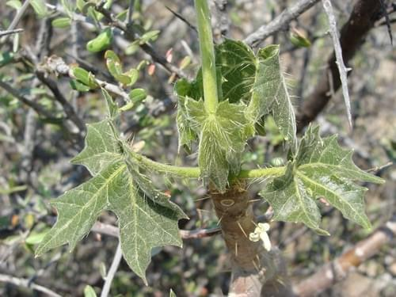
Usos: Las nueces son comestibles.
Medicinal: Se ocupa para el reumatismo y la artritis (en pomadas o se pega con las ramas), para contrarrestar las picaduras de alacranes. También, se usa como un cuajo natural para hacer quesos y requesón.
Área de distribucion: De selva baja caducifolia (Mixteca Poblana, Cañada Oaxaqueña).
Mala Mujer (Hoja ancha)
Nombre Científico:Cnidoscolus rostratus.
Características Es un arbusto, erecto, de 2 m de alto, con pelos espinosos blanco-transparentes que causan una irritación fuerte y caliente cuando se toca, con hojas simples, alternas, normalmente agrupadas por las puntas de los tallos, semi orbiculares con 3 lóbulos principales, puntiagudas, la base cordata, verde oscuras, hasta 20 cm de largo con flores en grupos terminales, con 5 pétalos blancos, 5 estambres con frutos redondos, con rostros en la punta, son nueces que se parten en pedazos.
Especie: Endémica.
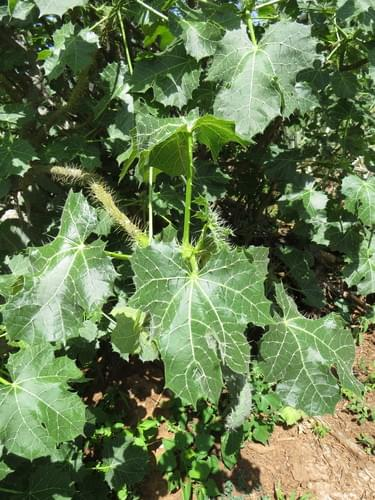
Usos: Las nueces son comestibles.
Área de distribucion: De semidesierto y selva baja caducifolia (Mixteca Poblana).
Mes de floración y fruto: De mayo a noviembre.
Rompebota
Nombre Científico:Senna galeottiana.
Características Árbol o arbusto caducifolio de hasta 7 metros de alto, con tronco leñoso y crecimiento irregular de las ramas. Produce una inflorescencia en racimo compuesta por flores pentámeras de color amarillo brillante. Sus frutos son vainas, que van de color marrón oscuro a verde seco, muy delgadas y de forma aplanada.
Especie: Endémica.
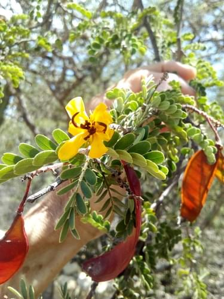
Usos: Leña, Ornato. Una especie con potencial para la restauración ecológica (se encuentra en propagación en el vivero comunitario de Caltepec).
Área de distribucion: Selva baja caducifolia, a veces presente en matorral y sitios perturbados.
Mes de floración y fruto: Entre febrero y mayo.
Mezquite
Nombre Científico: Prosopis laevigata.
Características Árbol espinoso de hasta 12 m de alto. Flores en espigas de color blanco-amarillentas o blanco-verdosas. Sus frutos son vainas delgadas de 1 cm de ancho y hasta 20 cm de largo, verdes o amarillentas con manchas rojizas en la madurez.
Usos: Leña, Forraje, Sombra. La madera se ocupa para construcción debido a su resistencia. Una especie que sirve en la restauración ecológica. También, es alimento para los cocopaches (insectos comestibles).
Especie: Nativa
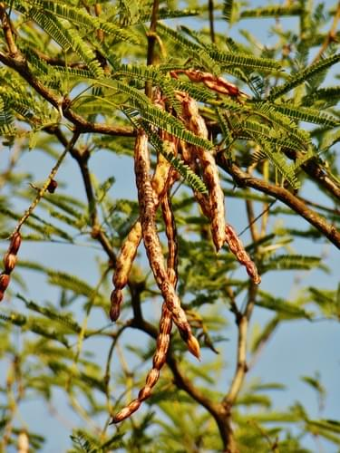
Medicinal: Las hojas se hierven para hacer lavados contra los granos o para irritación en los ojos.
Área de distribucion: Está planta la podemos encontrar en la Mixteca Poblana, Filo de la Tierra Colorada, Cerro Colorado, Coixtlahuaca, Cañada Oaxaqueña. Particularmente abundante en las zonas áridas y semiáridas.
Mes de floración y fruto: La época de floración inicia en febrero a marzo y termina de abril a mayo. La fructificación ocurre en los meses de junio a julio.
Chichipe
Nombre Científico: Polaskia chichipe.
Características Cactácea arborescente de hasta 5 m de alto. Su tronco es grueso y verde oscuro, con flores amarillas. Tiene numerosas espinas que cubren sus columnas. Fruto rojo globoso de 3 CM de diámetro espinoso con pulpa jugosa. Semillas negras.
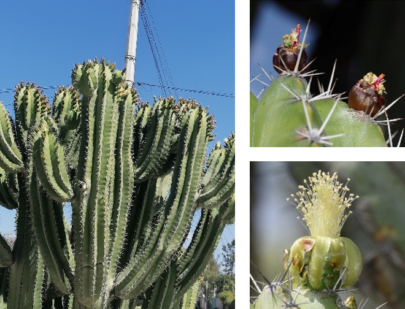
Usos: Frutos comestibles.
Especie: Endémica a los estados de Puebla y Oaxaca.
Área de distribucion: Puede encontrarse en la Mixteca Poblana, Cerro Colorado, Coixtlahuaca en suelos aluviones calizos y en suelos negros someros.
Mes de floración y fruto: Marzo a junio.
Pino lacio (pino pseudostrobus, pino de cinco hojas, ocote.)
Nombre Científico: Pinus pseudostrobus Lindl.
Clasificación:
Reino: Plantae
División: Pinophyta.
Clase: Pinopsida.
Familia: Pinaceae.
Género: Pinus.
Sección: Trifoliae, subsección Australes..
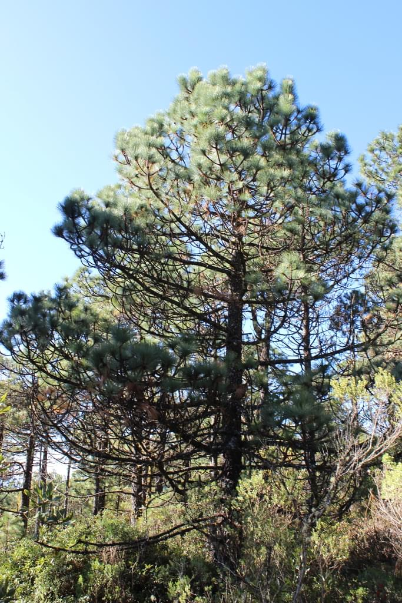
Distribución y hábitat:
Originario de México y Centroamérica (principalmente México, Guatemala, El Salvador y Honduras).
En México se encuentra en gran parte de la Sierra Madre Oriental, Sierra Madre del Sur, Eje Neovolcánico y Chiapas.
Altitud: 1,600 – 3,000 msnm.
Crece en bosques templados de pino, pino-encino y mesófilo de montaña.
Prefiere suelos profundos, francos a arenosos, de origen volcánico, con buen drenaje
Su clima es templado subhúmedo, con lluvias de verano (600–1,500 mm anuales). Trifoliae, subsección Australes..
Características morfológicas:
Árbol: Puede alcanzar 25–35 m de altura, excepcionalmente hasta 40 m; tronco recto de hasta 1 m de diámetro.
Corteza: Grisácea a café rojiza, con fisuras profundas en ejemplares adultos.
Hojas (acículas): Dispuestas en fascículos de 5 (a veces 4–6), de 15–30 cm de largo, flexibles y colgantes, de color verde claro a verde-azulado.
Conos masculinos: Amarillos a anaranjados, cilíndricos, de 1–2 cm
Conos femeninos (piñas): Ovoides a cónicos, de 10–18 cm de largo, cafés al madurar; maduración en 2 años.
Semillas: Obovadas, de 6–9 mm, con ala membranosa de hasta 2 cm.
Importancia Ecológica:
Forma bosques puros o mixtos con encinos (Quercus), oyameles (Abies), y otros pinos.
Contribuye a la captación de agua, conservación de suelos y captura de carbono.
Sus semillas son alimento para aves y roedores
Usos:
Madera: Muy apreciada por su calidad, fácil de trabajar, utilizada en construcción, muebles, postes, triplay, papel y resinas.
Resina: Empleada en trementina y otros derivados.
Reforestación: Una de las especies más utilizadas en programas forestales en México.
Ornamental: Plantado en parques y carreteras
Estado de Conservación:
Aunque se encuentra ampliamente distribuido, enfrenta presiones por deforestación, tala ilegal e incendios forestales.
Figura en la NOM-059-SEMARNAT-2010 bajo la categoría de Sujeta a protección especial (Pr) en algunas regiones.
Requerimientos de Cultivo:
Prefiere clima templado subhúmedo, con temperaturas medias anuales de 12–18 °C.
Tolera heladas moderadas.
Requiere pleno sol para buen desarrollo.
Crecimiento rápido en comparación con otras especies de pino.
Dato Curioso:
El nombre pseudostrobus significa “falso strobus”, ya que guarda semejanza con Pinus strobus (pino blanco de Norteamérica), pero se distingue por sus hojas más largas y flexibles.
Pino blanco (Pino ayacahuite, pino ayacahuite chico, ocote blanco, pinabete. )
Nombre Científico: Pinus ayacahuite Ehrenb. ex Schltdl.
Clasificación:
Reino: Plantae
División: Pinophyta.
Clase: Pinopsida.
Orden: Pinales.
Familia: Pinaceae.
Género: Pinus.
Sección: Strobus (pinos de 5 acículas blandas).
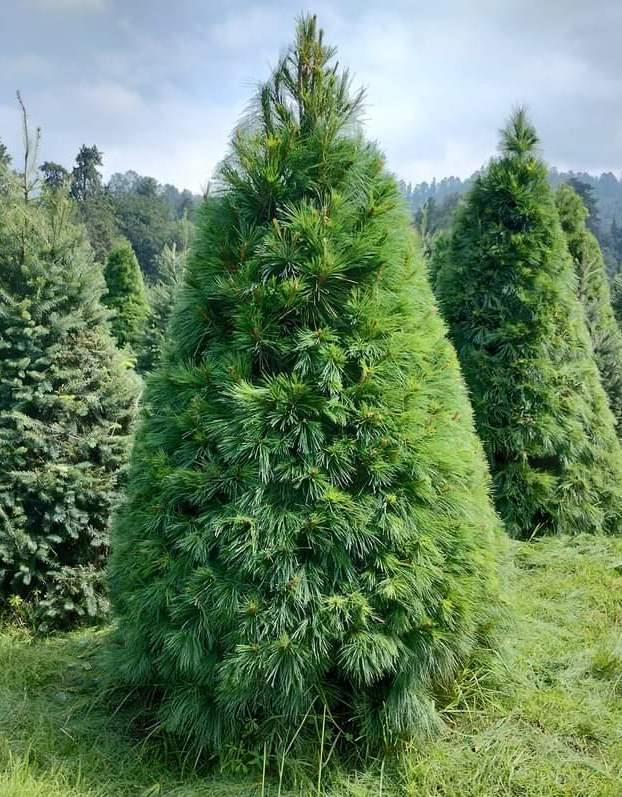
Distribución y hábitat:
Endémico de México y Guatemala.
Se localiza en la Sierra Madre Occidental, Sierra Madre Oriental, Eje Neovolcánico y Sierra Madre del Sur.
Altitud: 1,800 – 3,000 msnm.
Prefiere bosques templados húmedos de pino, pino-encino y bosques mesófilos de montaña.
Suelos profundos, fértiles, de origen volcánico, con buen drenaje.
Clima templado a semifrío, con lluvias de verano (800–1,500 mm anuales).
Características:
Árbol:Alcanza 30–40 m de altura, excepcionalmente hasta 50 m; tronco recto de hasta 1.5 m de diámetro.
Corteza: Grisácea en ejemplares jóvenes, volviéndose café oscuro y escamosa en adultos.
Hojas (acículas): En fascículos de 5, delgadas y flexibles, de 8–18 cm de largo, color verde azulado.
Conos masculinos: Amarillentos, cilíndricos, de 1–2 cm.
Conos femeninos (piñas): Grandes, cilíndrico-oblongos, de 15–40 cm de largo, color café claro al madurar, colgantes.
Semillas: Pequeñas, de 6–8 mm, con alas delgadas y largas (hasta 2–3 cm).
Importancia Ecológica:
Forma bosques de pino y pino-encino junto con Quercus, Abies religiosa, Pinus montezumae, Pseudotsuga y otros.
Fundamental para la retención de suelos, infiltración de agua y refugio de fauna.
Sus piñas producen gran cantidad de semillas que alimentan aves y pequeños mamíferos.
Usos:
Madera:Muy apreciada, suave y ligera, fácil de trabajar; empleada en construcción, carpintería, molduras, cajas, embalajes y pulpa para papel.
Ornamental: Utilizado en reforestación y como árbol de Navidad en algunas regiones.
Resina: En menor escala, aprovechada para trementina.
Estado de Conservación:
Considerado de interés forestal prioritario en México.
Vulnerable a la tala excesiva, incendios y plagas (como descortezadores).
Aparece en la NOM-059-SEMARNAT-2010 como sujeto a protección especial (Pr) en ciertas áreas.
Requerimientos de Cultivo:
Prefiere clima templado-frío, con temperaturas medias de 10–16 °C.
Necesita suelos profundos, húmedos y bien drenados.
Tolera heladas fuertes.
Crecimiento relativamente rápido bajo buenas condiciones.
Dato Curioso:
El nombre ayacahuite proviene del náhuatl ayacahuitl, que significa “pino de hojas delgadas y blandas”. Es uno de los pinos blancos más altos de México y guarda parentesco con el Pinus strobus de Norteamérica.